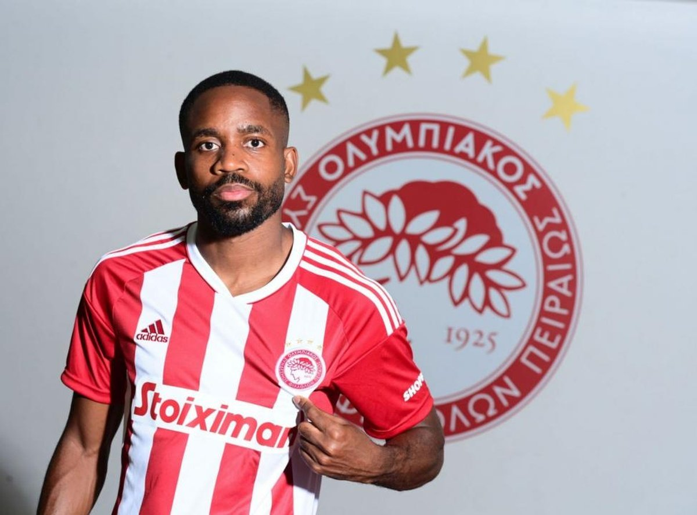

Σεντρίκ Μπακαμπού
ΠΟΙΟΣ ΕΙΝΑΙ Ο ΕΙΚΟΝΙΖΟΜΕΝΟΣ?
Ο Σεντρίκ Μπακαμπού (γεννημένος στις 11 Απριλίου 1991 στο Βιτρί-συρ-Σεν) είναι Γάλλος ποδοσφαιριστής ο οποίος αγωνίζεται στον Ολυμπιακό Πειραιώς. Αγωνίζεται κυρίως στην θέση του κεντρικού επιθετικού.

ΟΜΑΔΕΣ ΠΟΥ ΕΧΕΙ ΑΓΩΝΙΣΤΕΙ
2010-2014 ΦΚ Σοσό 94 (18) 2014-2015 Μπούρσασπορ 27 (13) 2015-2018 Βιγιαρρεάλ ΚΦ 75 (32) 2018-2022 Γκουοάν Πεκίνου 71 (48) 2022 Μαρσέιγ 15 (4) 2022- Ολυμπιακός 16 (9) Εθνική ομάδα 2009 Γαλλία U18 5 (1) 2009-2010 Γαλλία U19 16 (4) 2010-2011 Γαλλία U20 17 (3) 2015-2022 ΛΔ Κονγκό 40 (13)
ΠΕΡΙΣΣΟΤΕΡΕΣ ΠΛΗΡΟΦΟΡΙΕΣ
Ο Μπακαμπού είναι διεθνής με τις ομάδες νέων της Γαλλίας και έχει εκπροωπήσει την χώρα του σε επίπεδο U-18 και U-19. Ήταν μέλος της ομάδας που κατέκτησε το Ευρωπαϊκό Πρωτάθλημα U-19 του 2010 στα πάτρια εδάφη. Την 1η Μαΐου 2010, ο Μπακαμπού αγωνίστηκε στον τελικό του Κυπέλλου Γκαμπαρντελά του 2010, ενώ πέτυχε τέρμα για την ομάδα του στο Σταντ ντε Φρανς. Η Σοσό, παρ'όλα αυτά, γνώρισε την ήττα στον συγκεκριμένο αγώνα με σκορ 4–3 στην διαδικασία των πέναλτι.[2] Ο Μπακαμπού είχε, πρηγουμένως, πετύχει δύο τέρματα στη νίκη της ομάδας του στα ημιτελικά της διοργάνωσης.[3] Ο Μπακαμπού πραγματοποίησε το επαγγελματικό του ντεμπούτο στις 7 Αυγούστου 2010 στον εναρκτήριο αγώνα της ομάδας του για το πρωτάθλημα απέναντι στην Αρλ-Αβινιόν, μπαίνοντας ως αλλαγή σε μια νίκη με τελικό σκορ 2–1.[4] Τον επόμενο μήνα, υπέγραψε το πρώτο του επαγγελματικό συμβόλαιο διάρκειας τριών ετών με την Σοσό μέχρι τον Ιούνιο του 2013.[5]
ΟΙ ΤΙΤΛΟΙ ΤΟΥ
Γαλλία Γαλλία
Ευρωπαϊκό Πρωτάθλημα U-19: 2010 Παγκόσμιο Κύπελλο U-20 Ποδοσφαίρου 2011: 4η Θέση
ΣΤΗΝ ΕΠΙΣΗΜΗ ΙΣΤΟΣΕΛΙΔΑ ΤΟΥ TRANSFERMARKT Ο 32ΧΡΟΝΟΣ ΣΕΝΤΡΙΚ ΜΠΑΚΑΜΠΟΥ ΕΧΕΙ ΑΞΙΑ 5 ΕΚΑΤΟΜΜΥΡΙΑ ΑΥΤΗΝ ΤΗΝ ΣΤΙΓΜΗ ΕΝΩ Η ΜΕΓΑΛΥΤΕΡΗ ΤΟΥ ΠΟΥ ΕΧΕΙ ΦΤΑΣΕΙ ΠΟΤΕ ΕΙΝΑΙ 25 ΕΚΑΤΟΜΜΥΡΙΑ!